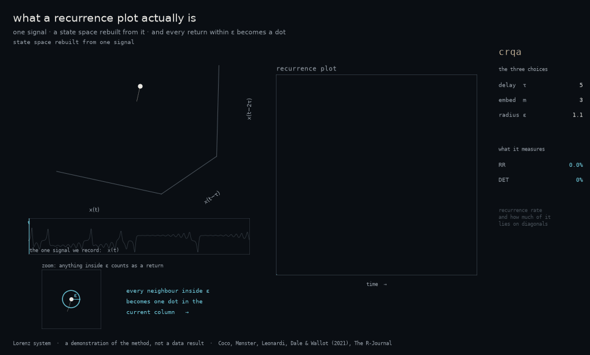

Sharing codes and know-how is what really makes science move fast. Together with collaborators, I develop statistical software, mostly in R, to make similar analyses easier for other researchers, and I share data and materials from published studies for replication.
Cross-recurrence quantification analysis of two time-series, categorical or continuous. Provides diagonal-recurrence profiling as well as deeper measures of the whole cross-recurrence plot, such as recurrence rate. Introduced in Coco & Dale (2014, Frontiers in Psychology) and extended in Coco et al. (2021, The R-Journal).
Extracts dependent measures from two-dimensional x–y coordinates of an arm-reaching trajectory: area under the curve, latency to start the movement, x-flips and more, characterising the action-dynamics of a response. Built mainly for mouse-tracking experiments.

Explaining and replicating are core principles of science. In the interest of sharing experimental data and methodology for broader interrogation, here is data and stimulus material from selected published studies.
165 indoor scenes in which the same location holds either a consistent or an inconsistent object, across left/right positions, normed for name agreement, conceptual and perceptual properties (clarity, confidence, prototypicality, familiarity, manipulability, visual complexity) and accompanied by free-viewing eye-tracking data. Allegretti, D'Innocenzo & Coco, Behavior Research Methods (2025). DOI
Coco & Keller, Cognitive Science 2012: responses across modalities are similarly coordinated by scan patterns. This paper was featured in New Scientist and BBC Mundo.
Coco & Keller, Journal of Vision, 2014, 14(3):11. Eye-movement features can accurately classify the task from which responses were collected. DOI